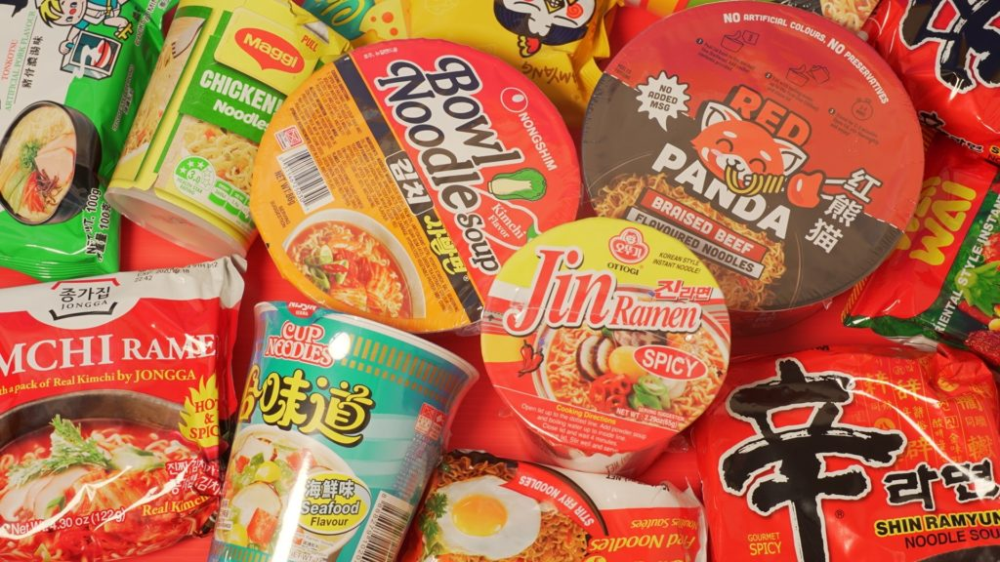
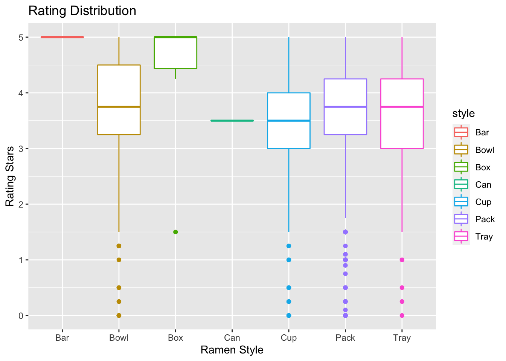

In this Ramen dataset, there are 7 types of ramen packaging. We wonder if different pakcaging may affect the texture and flavor of ramen. In the following adventure, let’s see if the packaging makes a difference!
 ## Distribution of Rating by style 
=======In this Ramen dataset, there are 7 ramen packaging types/styles. We wonder if different packaging styles may affect the texture and flavor of ramen - some of us prefer cup noodles, while some prefer packaged noodles. In the following adventure, let’s see if the packaging style makes a difference!
## Distribution of Rating by Style First, let’s take a look at the distribtion of ramen rating by packaging style. According to the box plot, we can see that most ramens have rating scores higher than 3 stars out of 5. Bar, Box, and Can styles of ramens have limited number of records in our dataset, so the box plot results may be biased. Among other styles of ramens, bowl ramens tend to have higher rating scores comparing to others, while cup ramens seem to have lower rating scores (despite that pack ramens have the most outliers with low rating scores).
Now let’s check the counts of ramens included in each style.
>>>>>>> 25ec74774aa89bc11ecfa889cf4f46371268bf10We see that the most common style of packaging is Pack ramen. The median of rating for Tray, Cup, Can, Pack, Bowl ramens are similar (around 3.7 stars). The median of Bar and Box ramen has the highest rating. However, since the samples of Bar, Can, Box ramens are low, we might neglect them at this moment.
We would love to know if the differences in rating scores are significant across different ramen packaging styles. To do this, we decided to conduct an Analysis of Variance (ANOVA) test. As shown in the box plot above, there are only few ramens classified as Bar, Can or Box styles, so we will drop these styles in the following analysis, as they are not representative.